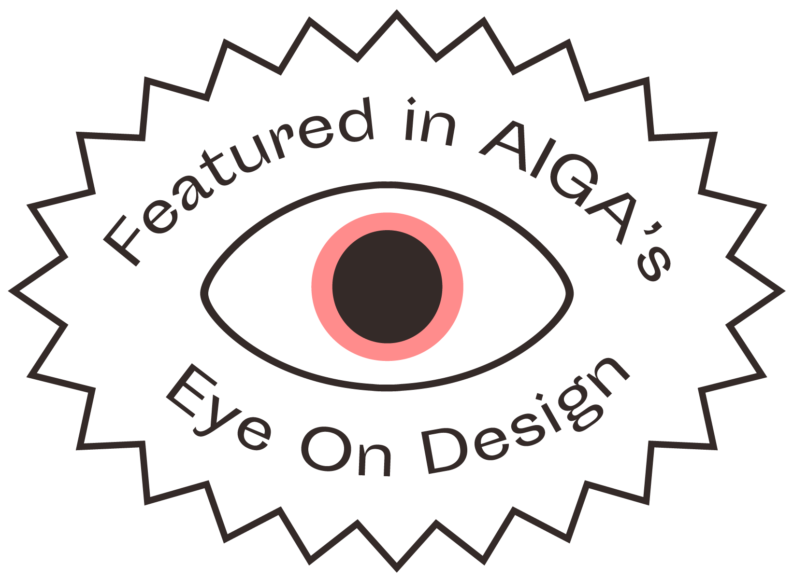

archives.design is a collection of design items from the Internet Archives
archives.design is a self driven project that was started in response to my own frustrations doing design studies over the past year. Since the libraries and physical archives in my area were closed due to COVID restrictions, my research was constrained to what I could access digitally. Throughout my studies I found the Internet Archive to be an invaluable resource. However, due to the nature of the Internet Archive — it's non-profit status as well as the sheer scale of their collection — their end-user experience wasn’t the greatest. I often had difficulties finding what I was looking for because of the lack of curation in their giant collection. Add on top of this a combination of confusing boolean operators and an absolute hodgepodge of different metadata tags and category names, and finding exactly what you're looking for can often be a tedious and painful task.
I figured that if I was having these problems, then there were likely other folks who were as well. So I decided to put my design skills to good use and work on a solution. The biggest issues that I felt needed to be solved were the user experience, and the content curation. For the archive's curation, I opted to curate each item manually. While I could have likely figured out a way to curate these items using an automated script, I feel that there is an inherent value to human curation. When a collection is curated by a computer it can seem confusing and arbitrary. Whereas with human curation there is often a deliberate connection between each object in the collection. For the navigation I wanted to ensure that it was simple enough that anyone could understand it and operate it. So instead of having a ton of complex operators, I instead decided to organize them by their aspect in design. I also decided early on that I wanted to display the items by their covers. I figured, what better way to browse designed objects than by how they look. I seem to have struck a nerve in the design community with this project. As of writing, it has been featured in AIGA's Eye on Design, Typeroom, the Italian design site frizzifrizzi, and even got mentioned at the end of Rick Smith's excellent piece Expansion Set: Rewriting Black Design in America in Print Magazine.

“…the equivalent of a stunning Design Library on a side street in an old city, well-lit and easy to use, using @internetarchive as the back end.”